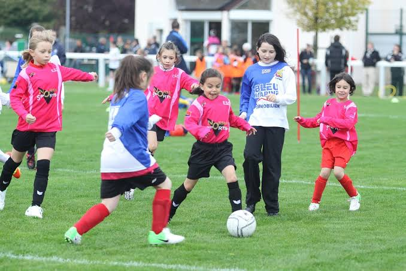
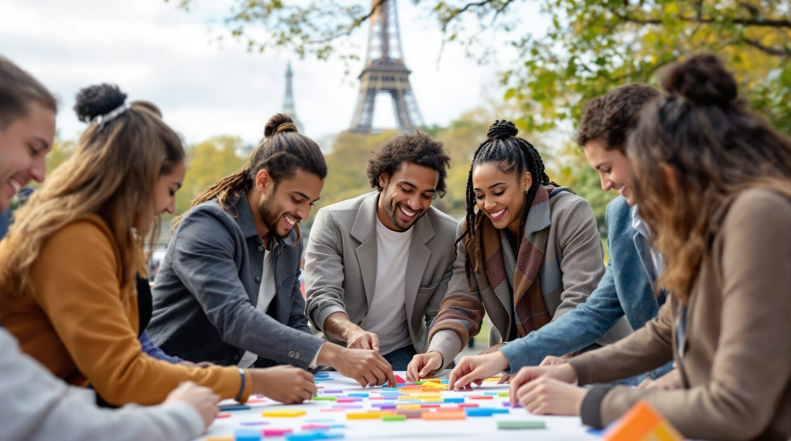
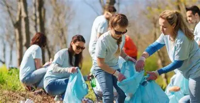

Nos activités sont ouverts à toutes, quel que soit l'âge ou le niveau. Chaque séance est conçue pour permettre aux joueuses de progresser dans une ambiance conviviale et motivante. Elles y apprennent les bases du football, développent leurs techniques de jeu, renforcent leur esprit d'équipe et améliorent leur condition physique grâce à des exercices variés et adaptés. L'objectif est de progresser tout en prenant plaisir à jouer et à partagerdigée, plus fluide :
Les activités du club sont organisées tout au long de la saison afin de permettre aux joueuses de partager des moments conviviaux, de renforcer l'esprit d'équipe et de vivre pleinement la vie du club. En complément des entraînements et des compétitions, nous proposons des événements sportifs, des animations et des temps de partage adaptés à tous les âges. Ces activités favorisent la cohésion, le respect et le plaisir de pratiquer le football dans une ambiance chaleureuse et dynamique.

Les tournois amicaux sont l'occasion pour les joueuses de mettre en pratique ce qu'elles apprennent à l'entraînement dans un esprit de convivialité et de fair-play. Organisés tout au long de la saison, ils permettent de rencontrer d'autres équipes, de gagner en expérience et de renforcer la cohésion du groupe. Au-delà de la compétition, ces rencontres sont avant tout un moment de partage, de plaisir et de découverte, où chacune peut progresser tout en représentant fièrement les couleurs du club.
La journée portes ouvertes permet à toutes les personnes souhaitant découvrir le club de participer gratuitement à une séance de découverte. C'est l'occasion de rencontrer les éducateurs, les joueuses et les bénévoles, de visiter les installations et de s'initier au football dans une ambiance conviviale. Ouverte à tous les âges et à tous les niveaux, cette journée favorise les échanges, répond aux questions des familles et permet de découvrir les valeurs et l'esprit du club avant une éventuelle inscription.

Les activités de cohésion d'équipe permettent aux joueuses de mieux se connaître, de renforcer leurs liens et de développer un véritable esprit collectif. Organisées tout au long de la saison, elles favorisent la communication, l'entraide et la confiance entre les membres du groupe. À travers des jeux, des défis et des moments de partage en dehors du terrain, les joueuses apprennent à collaborer, à se soutenir et à construire une équipe soudée, aussi bien dans la victoire que dans les moments plus difficiles.
Les actions citoyennes permettent aux joueuses de participer activement à la vie du club et de contribuer à leur environnement. À travers des initiatives solidaires et responsables, elles développent des valeurs essentielles comme le respect, l'entraide et l'engagement collectif. Ces moments sont l'occasion de sensibiliser les joueuses à l'importance du bénévolat, du respect des installations et du rôle de chacun dans la vie associative.

Le micro-trottoir est une activité qui permet aux joueuses de prendre la parole, d'échanger avec les membres du club et de recueillir différents témoignages. À travers de courtes interviews, elles peuvent partager leurs expériences, présenter la vie du club et mettre en avant les valeurs du football féminin. Cette activité développe la confiance en soi, la communication et l'esprit d'initiative tout en créant du contenu convivial pour faire découvrir le club au public.